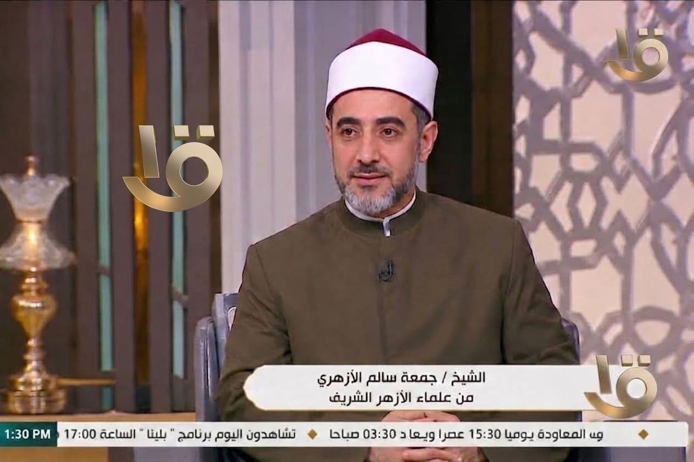

القراءة الكفؤة للقرآن
تدبر الآيات وفهم مقاصدها، مع أدوات ميسّرة للحفظ والمراجعة المستمرة.
منصة علمية دعوية شاملة تجمع بين أصالة العلم الشرعي وواقعية الحياة المعاصرة، تحت إشراف فضيلة الشيخ د. جمعة سالم الأزهري، لتكون رفيقك في التزكية والفقه وبناء الذات والأسرة.

هل يجوز تأخير قضاء الصيام إلى ما بعد رمضان التالي؟
سؤال من إحدى الأخوات — إجابة معتمدةيجوز ذلك عند وجود عذر مستمر، مع وجوب الإطعام في بعض الأحوال...
"من صدق مع الله في نيته، أعانه الله على تحقيق مراده"
من كلمات فضيلة الشيخرسالة تأمل قصيرة تُنشر يومياً لتكون زاداً إيمانياً في يومك.
لقاء مباشر: أسئلتكم في الفقه المعاصر
بث تفاعلي أسبوعي للإجابة عن استفساراتكم مباشرة.
مسارات معرفية متكاملة، من فهم كتاب الله إلى تنظيم شؤون حياتك اليومية.
تدبر الآيات وفهم مقاصدها، مع أدوات ميسّرة للحفظ والمراجعة المستمرة.
أحكام العبادات والمعاملات المالية بأسلوب واضح يراعي واقع الحياة المعاصرة.
محطات في تطهير القلب وتقوية الصلة بالله عبر برامج تربوية عملية.
خطوات عملية لتكوين عادات إيمانية وحياتية راسخة تدوم بإذن الله.
معالجة القضايا الفكرية والشبهات المعاصرة بمنهج علمي رصين وهادئ.
اختر مدخلك المناسب، أو اطّلع مباشرة على أحدث الفتاوى المعتمدة من فضيلة الشيخ.
سيتم إرسال سؤالك مباشرة عبر واتساب لفضيلة الشيخ.
يبدأ الأمر بترتيب الأولويات وتقديم حق الله على ما سواه، مع تنظيم عملي للمهام اليومية...
قراءة الإجابة كاملةالأصل البناء على اليقين وهو الأقل، ثم سجود السهو قبل السلام في أغلب الأحوال...
قراءة الإجابة كاملةالزكاة ركن واجب لتحقيق التكافل الاجتماعي وتطهير المال، بخلاف الصدقة التي تبقى تطوعاً إضافياً...
قراءة الإجابة كاملةالقدوة العملية والتدرج في التعليم مع الترغيب هما أساس غرس محبة العبادة في نفوس الأبناء...
قراءة الإجابة كاملةمحتوى مرئي هادئ ومركّز، يناسب جدولك اليومي مهما ضاق وقتك.
خطوات تأسيسية لكل من يريد إصلاح قلبه من جديد.
شرح مبسّط لأهم مسائل الطهارة في الحياة اليومية.
نصائح عملية لتأسيس علاقة زوجية متينة ومستقرة.
معالجة علمية رصينة لإحدى الشبهات المتكررة بين الشباب.
سلاسل دائمة تحمل طابع المنصة، تجمع بين العمق العلمي وخفّة الأسلوب.
وقفات إيمانية قصيرة تلامس القلب وتجدد الصلة بالله.
محطات تدبّر أسبوعية في آيات مختارة من كتاب الله.
خطابات مباشرة موجّهة لفئات مختلفة: الأب، الابن، المهموم، الشاب.
حكايات من التاريخ والسيرة، ودروسها المستفادة لحياتنا اليوم.
معلومة علمية أو شرعية مركّزة، تُقرأ أو تُشاهد في دقيقة واحدة.
إضاءات على سِيَر أعلام الأمة وما تركوه من أثر خالد.
تصحيح المفاهيم والأحاديث المنتشرة، ومواجهة الشائعات والتضليل الرقمي بمنهج علمي دقيق.
تخريج علمي للحديث المشهور وبيان درجته الصحيحة بين أهل الحديث...
قراءة التحقيق كاملاًتوضيح مصارف الزكاة الثمانية المحددة شرعاً، ولماذا لا يدخل المسجد ضمنها مباشرة...
قراءة التحقيق كاملاًالفرق الدقيق بين التوكل الصحيح والتواكل المذموم، بأدلة من القرآن والسنة...
قراءة التحقيق كاملاًمحتوى مقروء موثّق، متاح للقراءة المباشرة أو التحميل لقراءته في أي وقت.
انطلقت منصة «العلم والإيمان والحياة» لتكون جسراً بين العلم الشرعي الأصيل واحتياجات الإنسان المعاصر، تحت إشراف فضيلة الشيخ د. جمعة سالم الأزهري، الذي كرّس مسيرته للجمع بين التأصيل العلمي والتيسير الدعوي.
نؤمن أن الإيمان الصحيح لا ينفصل عن واقع الحياة، ولذلك صُممت المنصة لتخاطب الإنسان في عبادته وأسرته وعمله وتفكيره على حدٍّ سواء.